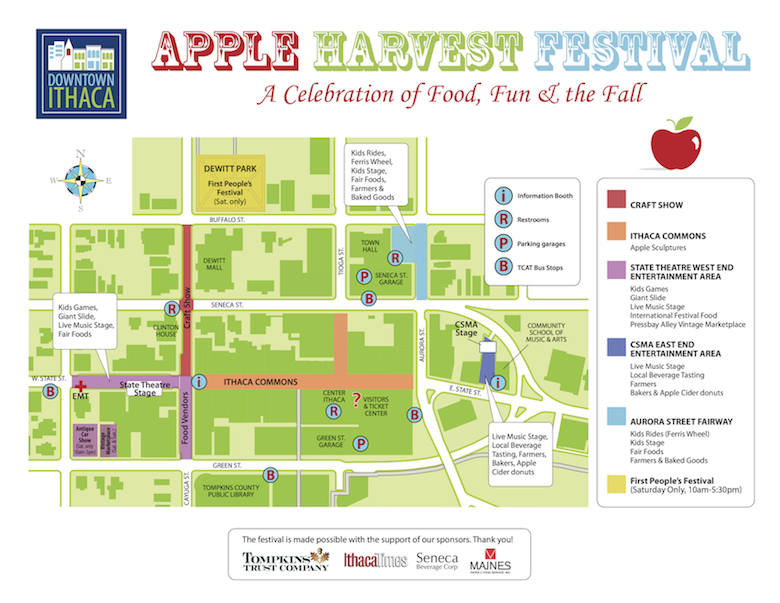

Map of Apple Festival Events (hover over map to zoom in)

Location for 2013
The festival takes place in the heart of Downtown Ithaca. It starts on the 100 W. Block of State Street and continues through the Commons east toward Cornell University. The walking path of the festival takes you by the large mural project in the Commons of over 200 different art pieces by local organizations and artists. It also leads you by the historic State Theatre, Ithaca Commons, Restaurant Row, and the Community School of Music and Arts (CSMA).
The festival will have an additional entertainment area added this year. It is on the east end of the Commons by the CSMA. Here you will find a variety of farm goods, children's entertainment and a new sound stage for performance. As the Commons undergoes a historic transformation, we are expanding the footprint of the festival.
Directions by Bus: TCAT
West Hill:
Route 14 or Route 20 (from EcoVillage) to Green @ the Commons.
Route 52 to Seneca @the Commons. Note: Limited Saturday service, no Sunday service.
Danby:
Route 65 to Seneca @ the Commons. Note: Limited Saturday service, no Sunday service.
Dryden:
Friday: Route 43 to Green @ the Commons.
Weekend: Route 75 to the Shops @ Ithaca Mall; transfer to route 70, route 13 (Saturday only), or route 30 to the Commons.
Enfield:
Route 20 to Green @ the Commons.
Groton/Freeville:
Friday: Route 40 or Route 43 to Green @ the Commons.
Weekend: Route 74 to the Shops @ Ithaca Mall. Transfer to route 70, route 13 (Saturday), or route 30 to Seneca @ the Commons.
Lansing (the Shops at Ithaca Mall):
Route 30, Route 13 (Friday/Saturday only) or route 70 (Saturday/Sunday only) to Seneca @ the Commons.
Newfield:
Route 67 to Green @ the Commons. Note: Limited Saturday/Sunday service.
Trumansburg:
Route 21 to Green @ the Commons. Note: Limited Saturday/Sunday service.